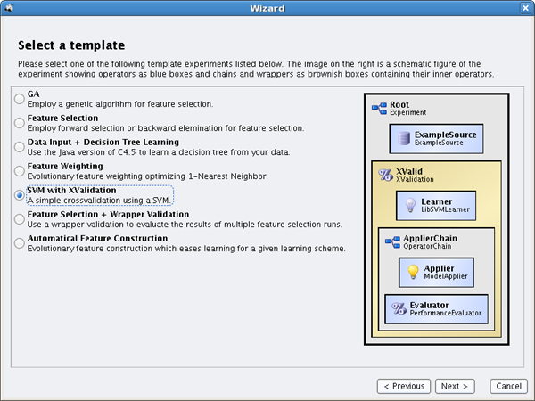
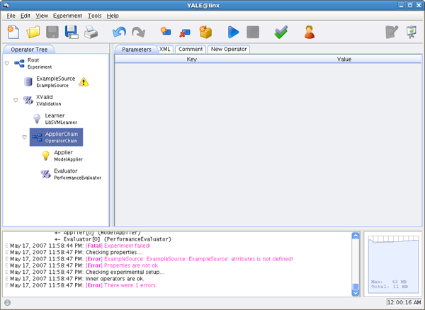

Although the RAPIDMINER tutorial and this GUI manual contain a huge amount of information about RAPIDMINER and all of its parts, it is often very convenient to get the desired information during work. Therefore, we added an online help function to almost all parts of RAPIDMINER. Each parameter, operator and GUI item displays information as tool tip text, which appears after holding the mouse cursor a few moments above the object at hand.
When RAPIDMINER starts up, it presents you a welcome screen that lets you choose between five possibilities
When you start RAPIDMINER the first time, you should probably make the online tutorial. It explains the main concepts, the GUI usage and shows many of the operators provided by RAPIDMINER.
We assume that you have chosen to start the Wizard (figure 1). The Wizard is also available from the File menu. The Wizard guides you during the process of creating a new process. You start by selecting a template process from a list. This template serves as a kind of skeleton for your process.
|  |
Processes in RAPIDMINER are made up from a set of nested operators. An operator consumes a set of input objects and produces some output objects. These objects can be data files, models, performance criteria, and more. Simple operators like learners consume an example set and produce a model that can be used by an applier for prediction. Moreover, some operators can have inner operators. For example, a k-fold cross-validation splits up an example set into training set and test set and applies its inner operators, which are a learner and an applier. Each time a disjoint test set is used.
If you click on the radio button next to the "SVM with XValidation" template, the structure of the sample process is depicted on the right. You see an operator chain consisting of an ExampleSource that reads data from a file. This data is then passed to the cross-validation, which itself has inner operators, in this case learner and applier for a support vector machine (SVM). See the RAPIDMINER Tutorial for more information on SVMs and the individual operators.
Now that you have chosen the template, click on next. In this step you can enter some of the most important parameters (figure 2). In case of a cross-validation this is e.g. the number of validations.
A lot of process setups in RAPIDMINER need a data file as input which is known in supervised learning as an example set. The example sets have to be in a special format and require that the attributes are described in a seperate XML file. In other words, the file in special format is the set of examples where each example is a vector and the XML file describes the semantics of every value in the vector.
In order to create such an XML file now, you can press the small Edit button next to an attribute description file property. The dialog popping up is described in section 2.7 and is called Attribute Editor. The files generated with help of the Attribute Editor can also be used as input for the ExampleSource operator, which is the standard data input operator for RAPIDMINER.
An even more convenient way of loading almost arbitrary data files into RAPIDMINER and to define attribute description files for your data, is to use the Example Source configuration wizard. Just press the Start Configuration Wizard... button at the top of the parameter table of the operator. Configuration wizards are also available for other operators which are hard to define, e.g. for the DatabaseExampleSource operator.
As operators can have inner operators and each operator except the root operator is enclosed within another operator, the natural representation of an process is a tree. If you have used the Wizard, you see your process definition on the left side. If you did not use the Wizard you see an empty process consisting only of an empty operator chain. Figure 3 shows this main process view which is called ``tree view''.
By clicking on the XML tab you see the XML configuration file that describes your process (figure 4). If you like you can always edit it by hand using your favorite text editor. For more information about the XML configuration files see the RAPIDMINER Tutorial. You can specify HTML comments to each operator in the Comment tab which are saved in the XML files. If you specify a comment for the root operator of the process, this comment is displayed in a dialog each time the process setup was loaded. Selecting the Box View from the View menu shows a nicer box representation of your process you already know from the Wizard. You can use this view for printing.
To the right of the tree you see a table with two columns labeled ``Key'' and ``Value''. Depending on the selected operator you can enter the parameters of this operator. Mandatory parameters are shown in bold face. Some of the parameters may have a default value, which will be used if no other value was specified. If the entered value is out of range, it will be corrected automatically. Some parameters accept only numbers, others let you select from a list of values. For file parameters, the file name can be entered into the text field or the file is selected by means of a file chooser dialog, that pops up when pressing the [...] button. All file names can be defined relatively against the location of the process definition file. Of course this only works after the process was saved.
If you started with a blank process setup or you want to modify an process created by the Wizard, the thing you probably want to do is create a new operator.
Since this feature seemed most important to us it is accessible from many places: from the Edit menu, the icon bar below the menu bar, the "New Operator" tab, the context menu popping up whenever you right-click on an operator of the tree, or simply by pressing [Ctrl-I]. Figure 5 shows the icon for operator adding.
Whichever way you choose to activate this function, it will pop up an operator browser that lets you choose the operator type (select a group or input or output types first if you want to decrease the number of possible selections). This browser displays all available information about the currently selected operator. You should name the operator before you add it into your process. You can always rename an operator by pressing [F2] or triple clicking it in the tree view. Figure 6 shows the operator browser.
Another way to add an operator is to right click on the parent operator and select the operator from the New operator submenu. Adding operators directly from the context menu is a very fast way of process design. Both ways of adding are only possible if an operator chain is selected, i.e. an operator which can have children.
You can replace an operator by selecting the new operator from the submenu Replace operator of the context menu. This is similar to adding a new operator from the context menu instead of using the operator browser. When you replace an operator chain the inner operators will remain. Therefore, operator chains containing any children can only be replaced by other operator chains.
Removing the operator is even easier. Just press [Delete] or select the corresponding menu item from the context menu or the Edit menu. Figure 10 shows the icon for operator deleting.
You can use the ``Drag & Drop'' functionality to move an operator up or down within the tree.
Pressing [F1] brings up a dialog with useful information about the currently selected operator. This option is also available from the context menu of each operator or the Tools menu. This operator info dialog displays:
Example sets or instance sets in RAPIDMINER are described by using a separate XML document. This attribute description file contains information about the type of data and its source. Data sets can be distributed over several files. This may be particularly useful if the label is stored within a file of its own. The RAPIDMINER Tutorial will give help in case you want to edit this file yourself.
The GUI displays a small Edit button next to an attribute description file property (e.g. the parameter attributes of an ExampleSource) in the property editor. A dialog called Attribute Editor will pop up containing a table with one column for each attribute (figure 9). If the property does not yet reference a proper attribute description file, the dialog will be empty. If you want to follow the instructions below, which describe how to create the XML description file, you can clear the table by clicking on the corresponding button above the table, or selecting "Clear" from the "Table" menu, to start from scratch.
Assume, you have a data file containing 50 rows of whitespace or comma separated attribute values, five each row. Click on load data to open that file. After that you should see five columns with some headers each and the data in the table cells. Question marks (``?'') indicate missing values. The following enumeration explains the meanings of the table headers:
Before you run your process you should validate it. You can click on Validate Process in order to check if all operators are nested correctly, provided with their necessary input and mandatory properties are set (figure 11). Although this might be useful, you do not need to do it manually, since these checks are performed automatically before the process is started.
The result of the validation including all error messages is printed into the message viewer at the bottom of the main frame. Additionally, they are indicated by an exclamation mark next to the operator in the tree view. An example is shown in figure 12. You can display these messages and more information about the operator by pressing [F1] or selecting the Operator info menu item from the context menu or from the Tools menu.
|  |
Process validation is very important in order to create proper process definitions and can help to understand the concepts of RAPIDMINER. We therefore recommend to use process validation as often as possible, at least once before you start your process. Together with the breakpoints from the operator context menu, it is usually much easier to design new or complex processes.
Running your process is quite easy. Select Run from the Process menu or click the corresponding play button, which is shown in figure 13.
You may follow the progress of your process by observing the output which is displayed in the Message Viewer. Note, that in GUI mode, the output does not need to be written to a log file. If you did not specify a log file, you can always save the message viewer contents to a file by selecting the corresponding menu item in the Message Viewer's context menu. You can also perform a search in the Message Viewer. This option is also accessible from the context menu of the viewer.
When your process is finished, the results will be automatically presented, i.e. all output returned by the outermost operator. This can be performance statistics, a decision tree or anything else. RAPIDMINER automatically selects the Results Mode. You can switch between the Edit Mode and the Results Mode by clicking on the two buttons in the top right corner, or by selecting the mode in the View menu. Pressing the hotkey [F9] is another possibility to toggle between both modes.
When your process was conducted successfully, the view automatically switches to the Results Mode. As far as your process chain produces an output, this mode shows you a visualization or a text describing the output. Figure 14 shows a decision tree learned from the golf data set.
At any time you can stop or pause (and resume) the process using the appropriate buttons or menu items in the Process menu. In any case the operator currently being executed will finish its execution in the background. Since this might take some time (e.g. if the current operator was a learner) this might lead to a delay for the actual process termination. Please be patient. You can, however, directly start and perform changes to the current process setup and even restart the process.
If you want to observe your process closely, you can set breakpoints before and after every operator (via the operator context menu). In that case, each time a breakpoint is reached, intermediate results are presented similar to the dialog popping up at the end of the process. You can see a plot of the memory usage and the progress bar.
In case you used the ProcessLog operator, you also find the produced plots as shown in figure 15. The results can be viewed online during the run of a process. On the left hand side you can select the value that is assigned to the x-axis and one or more of the values that should be plotted on the y-axis. The example shows a plot of the absolute error depending on the SVM parameter C and degree.
Additionally, the standard scatter plotter can use three dimensions. There are two 3D plot modes integrated in RAPIDMINER. The first one (3D (color) scatter plot) produces 3D plots, which can be rotated by dragging the mouse over the plot. The second 3D plot mode of RAPIDMINER is the 2D color plot mode. The first two dimensions build an 2D layer and the third dimension is mapped on different colors or alternatively different sizes. Other plotters exist for scatter plots or histograms. Table 1 gives an overview over all existing plotters.
There exist several objects which can also be plotted, e.g. Example sets have a meta data view, a data view, and a plot view. In plot view some features can be selected to build the dimensions of a plot. Figure 16 gives an example for the plot view of the well known Iris dataset.
Drag a rectangle to zoom into the selected range. Right click sets the view back to maximal range. This type of zooming is only supported for the 2D scatter plots. For some of the other plotters zooming might be implemented during a slider in the options pane on the left or even by simply turning the mouse wheel.
You can open a dialog for global settings (Preferences) from the Tools menu. These settings specify the behavior of RAPIDMINER for different tasks, e.g. if the system should beep at the end of an process or how many examples (data points) are displayed in the result viewer. The settings dialog allows to set all global properties described in the RAPIDMINER tutorial, including the path to the executables of external programs. You can apply the changed settings only for the current session or save them for future sessions.